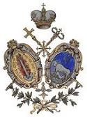

|
 |
 |
 |
 |
The Italo-Albanian Catholic Church
Southern Italy and Sicily had a strong connection with Greece in antiquity and for many centuries there was a large Greek-speaking population there. In the early centuries of the Christian era, although most of the Christians were of the Byzantine tradition, the area was included in the Roman Patriarchate, and a gradual but incomplete process of latinization began.
During the 8th century, Byzantine Emperor Leo III removed the region from papal jurisdiction and placed it within the Patriarchate of Constantinople. There followed a strong revival of the Byzantine tradition in the area. But the Norman conquest in the early 11th century resulted in its return to the Latin Patriarchate. By this time the local Byzantine church was flourishing, and there were hundreds of monasteries along the coasts of southern Italy. The Normans, however, discouraged Byzantine usages in their lands, and the Greek bishops were replaced by Latin ones. This marked the beginning of a process which led to the almost total absorption of the Byzantine faithful into the Latin Church.
This decline was reversed in the 15th century with the arrival of two large groups of Albanian immigrants who had fled their country following its conquest by the Turks. Those from the northern part of Albania, where the Latin rite was prevalent, were quickly absorbed into the local population. But those from the Orthodox south of the country remained loyal to their Byzantine heritage. At first they met with little understanding from the local Latin bishops. Although in the 16th century Popes intervened in favor of the Byzantines – in 1595 an ordaining bishop was appointed for them – the community continued to decline.
The situation began to improve in the 18th century. In 1742 Pope Benedict XIV published the bull Etsi Pastoralis which was intended to buttress the position of the Italo-Albanians in relation to the Latins. It paved the way for more progressive legislation – and recognition of the equality of the Byzantine rite with the Latin – in the next century.
Italo-Albanian seminaries were founded in 1732 in Calabria and in 1734 in Palermo. Seminarians in advanced theological studies in Rome reside at the Greek College (founded in 1577).
Today there are two dioceses of equal rank for the Italo-Albanians: the diocese of Lungro (in Calabria) was founded in 1919, has 29 parishes, and has jurisdiction over continental Italy; the diocese of Piana degli Albanesi, erected in 1937, covers all of Sicily and has 15 parishes. Alongside these two dioceses is the monastery of Santa Maria di Grottaferrata, just a few miles from Rome, which, having been founded in 1004, is the only remnant of the once-flourishing Italo-Greek monastic tradition. In 1937 the monastery was given the status of territorial abbey, according to which the abbot exercises jurisdiction over the monks and local faithful similar to that of a diocesan bishop. There were 17 monks in the monastery in 2006.
An inter-eparchial synod of the three Italo-Albanian jurisdictions took place from October 13 to 16, 1940, for the purpose of unifying their discipline and protecting their Byzantine traditions. Even though the outbreak of the Second World War limited the effectiveness of the synod, it was remarkable in the sense that a delegation from the Orthodox Church of Albania was present as observers.
A second inter-eparchial synod took place in three sessions in 2004 and 2005. It approved ten documents dealing with the synod's theological and pastoral context, the use of Scripture, catechesis, liturgy, formation of clergy, canon law, ecumenical and interreligious relations, relations with other Eastern Catholic Churches, re-evangelization and mission. These texts were then submitted to the Holy See which, by mid-2007, was still in dialogue with the three jurisdictions regarding their promulgation.
The Italo-Albanians have no parishes in the English-speaking world, but the identity of the small immigrant communities is promoted by groups such as the Italo-Albanian Byzantine Rite Society of Our Lady of Grace based in Staten Island, New York.
Location: Italy
Membership: 64,000
Last Modified: 16 Jul 2007